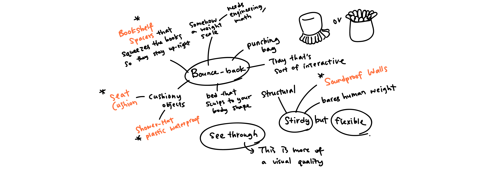
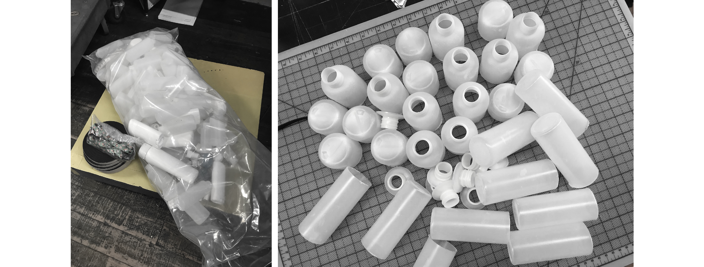
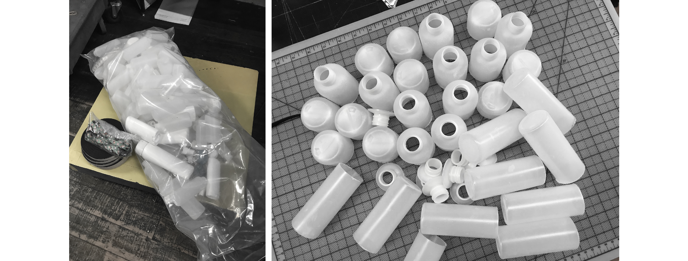

Sophia Tseng
To use only 2 (one primary and one secondary) materials obtained from the RRIE upcycling center, explore what the material does, and create a functional object. Timeframe: 12 Days.
I chose plastic bottles as my primary material and suede straps as my secondary material.
Before thinking of what objects I want to create, I tried ways to deconstruct or reform my material to see what it is capable of doing, and I had some really intriguing findings! Here are some notes:
I brainstormed based on the qualities that the octopus has, and I think a seat cushion represents its features the best.
I did two test pieces to confirm my order of construction and illuminate uneccessary steps. The test runs also helped me make sure that the procedures ensure a unified outcome of octopuses.


 
